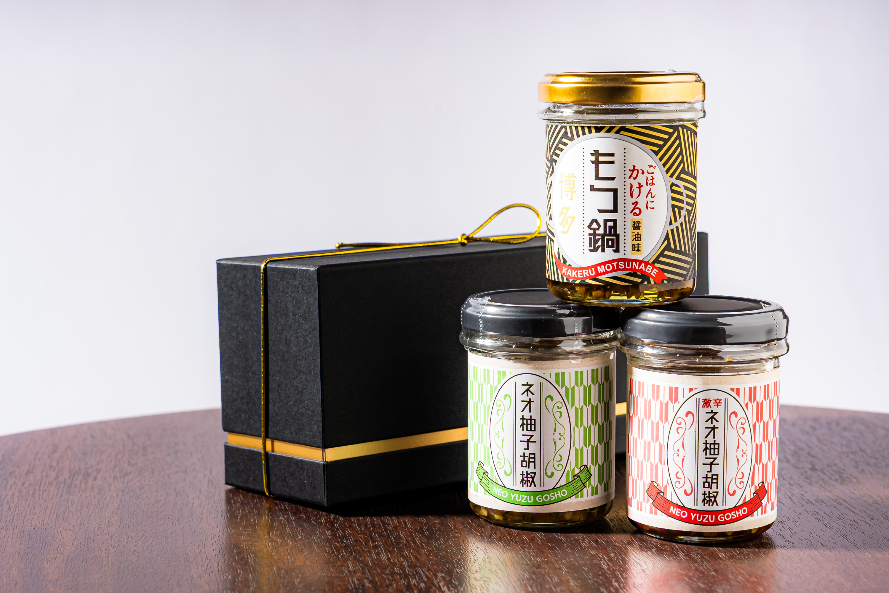
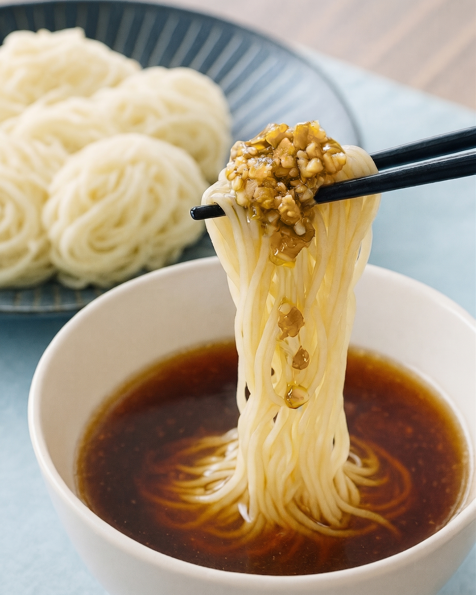

敬老の日
いつまでも元気でいてほしい人へ
毎日のごはんが、ちょっと楽しみになる。
福岡生まれのごはんのお供を、祖父母や両親など大切な人への敬老の日の贈り物に。

選べる3本セット
税込3,216円〜
合計5,000円以上で送料無料
敬老の日の贈り物を見る
Gift Lineup
食卓を少し楽しくする、福岡の味
毎日の食事で使いやすい、福岡生まれのごはんのお供を贈り物に。

Why This Gift
大切な人への贈り物に選びやすい理由
毎日の食事で使いやすい
ごはんや麺、豆腐など、身近な料理に少し加えて楽しめます。
福岡らしさを感じられる
柚子胡椒や博多のもつ鍋をヒントにした、福岡生まれの味です。
夫婦や家族でも楽しめる
3本の組み合わせを、贈る相手の好みに合わせて選べます。
贈り物にしやすいセット
専用ギフトボックスと、料理への使い方が分かるカードが付いています。
Everyday Table
いつもの料理に、少し加えるだけ
ごはんにも、麺にも、鍋料理にも。届いた日から食卓で楽しめます。



How to Choose
予算・贈り方から選ぶ
ギフトの内容や送料無料ラインに合わせて、選びやすい組み合わせをまとめました。
ギフト用セットを1つ贈る
合計
税込3,216円〜
贈る相手を思い浮かべながら、好きな3本を組み合わせられるギフトセットです。
- ギフト用 選べる3本ギフトセット × 1
- 専用ギフトボックス付き
- 食べ方カード付き
- 熨斗対応
送料無料ラインを意識した買い方
合計5,000円以上のご購入で送料無料。複数の味を贈りたいときや、自宅用も一緒に選びたいときの組み合わせです。
Gift Service
送料・配送・ギフト対応について
販売条件の詳細は、公式オンラインストアの商品ページと購入画面でご確認ください。
9月17日中のご注文が目安です
9月17日中にご注文いただければ、ほとんどの地域で9月21日の敬老の日までのお届けを見込んでいます。
北海道・東北・沖縄・離島などは配送にもう少し時間がかかる可能性が高いため、9月17日より前に余裕を持ってご注文ください。
送料・発送
送料は一律880円、沖縄・離島は1,300円です。合計5,000円以上のご購入で送料無料です。
注文確定後、通常2営業日以内に発送されます。到着日は配送地域や注文内容によって異なります。
熨斗・ギフトボックス
ギフト用セットは専用ボックス付きで、熨斗にも対応しています。商品ページのオプションから表書きと名入れをご指定ください。
配送先・明細書
ご注文者様とは別のお届け先を指定できます。明細書など金額の分かるものは、基本的に同梱しておりません。
配送日時指定の可否は、購入画面の表示をご確認ください。
FAQ
よくある質問
敬老の日までに届きますか？
2026年の敬老の日は9月21日です。基本的には9月17日中にご注文いただければ、ほとんどの地域で敬老の日までのお届けを見込んでいます。ただし、北海道・東北・沖縄・離島などは配送にもう少し時間がかかる可能性が高いため、9月17日より前に余裕を持ってご注文ください。
注文者と異なる住所へ送れますか？
はい。贈り先のご住所をご注文時の配送先に指定することで、相手の方へ直接送れます。
金額の分かるものは同梱されますか？
明細書など金額の分かるものは、基本的に同梱しておりません。
ギフト包装には対応していますか？
ギフト用の選べる3本セットは、専用ギフトボックスに入れてお届けします。
熨斗には対応していますか？
はい。ギフト用セットの商品ページで、熨斗の表書きと名入れを指定できます。熨斗を選択した場合、ゴールドリボンは付属しません。
配送日時を指定できますか？
注文内容や配送方法によって異なるため、購入画面に表示される指定可否をご確認ください。
辛いものが苦手でも食べられますか？
商品によって辛さが異なります。激辛ネオ柚子胡椒はしっかり辛さのある商品です。ネオ柚子胡椒は少しピリッとする程度で、ごはんにかけるもつ鍋醤油味は辛みが控えめです。贈る相手の好みに合わせて組み合わせをお選びください。
どの商品を選べばいいですか？
贈り物として選びやすいのは、専用ボックス付きの選べる3本セットです。ネオ柚子胡椒、激辛ネオ柚子胡椒、ごはんにかけるもつ鍋醤油味から、相手の好みに合わせて3本を選べます。
ありがとうの気持ちを、
毎日の食卓で楽しめる贈り物に。
商品内容と最新の販売条件は、公式オンラインストアでご確認ください。
敬老の日の贈り物を見る